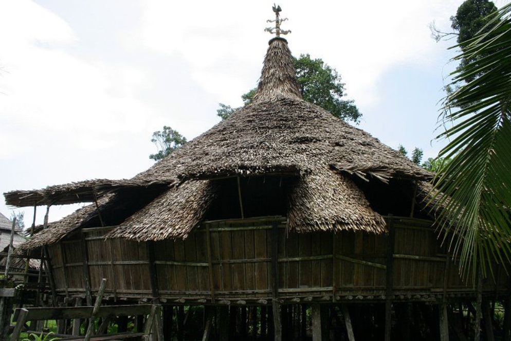

☰
Unveiling The Bidayuh Heritage of Bau
Do you know the history of The Bidayuh Heritage of Bau


The Bidayuh, one of the indigenous groups of Borneo, have a profound and rich history that is deeply intertwined with the land they inhabit. In Bau, a town in the Kuching Division of Sarawak, the Bidayuh community has established a unique cultural identity that has withstood the tests of time and external influences.
History
The story of the Bidayuh in Bau, Sarawak

.png)
The origins of the Bidayuh people are believed to be rooted in the highlands of Borneo. Historical records suggest that the Bidayuh people migrated from the interior of Borneo, driven by various socio-economic factors, to settle in what is now Sarawak. The fertile land of Bau, with its lush rainforest and abundant resources, provided an ideal environment for the Bidayuh to establish their community. They built their villages along rivers and in the highlands, practicing subsistence agriculture and maintaining a harmonious relationship with their natural environment.
The story of the Bidayuh in Bau is not just about living together peacefully. Evidence from Puncak Bratak speaks of a community that fiercely protected its home. Historical records show an 1837 attack by Iban Skrang on the Bidayuh settlement at the peak. This episode is proof of the perseverance of the Bidayuh people in the face of adversity. The Bidayuh Bau people have shown remarkable resilience in maintaining their cultural heritage amid the waves of change brought by colonization and modernization. Traditional governance structures such as the village head system, have been maintained, ensuring community decisions are made collectively and cultural practices are upheld.
One of the main aspects of Bidayuh culture that has been preserved is their language. The Bidayuh language with its various dialects is still spoken by the community and taught to the younger generation. This linguistic continuity is proof of the community's commitment to preserving their heritage. Moreover, the Bidayuh people continue to practice their traditional rituals and ceremonies. This includes Gawai Dayak, a harvest festival that is celebrated with great enthusiasm and joy. Gawai Dayak is a time for thanksgiving, feasts, and traditional ceremonies that unite the community, strengthening their cultural bonds.
The Bidayuh people also attach great importance to oral history. Elders in the community pass down stories, legends, and historical accounts to the younger generation. These narratives not only serve as a tool to preserve history but also instill identity and pride in the Bidayuh heritage. Despite these challenges, the Bidayuh community is resilient, holding fast to their traditions and way of life. Their history is a reminder that Bau's narrative reaches far beyond the gold rush, encompassing the people who have called this land home for generations.